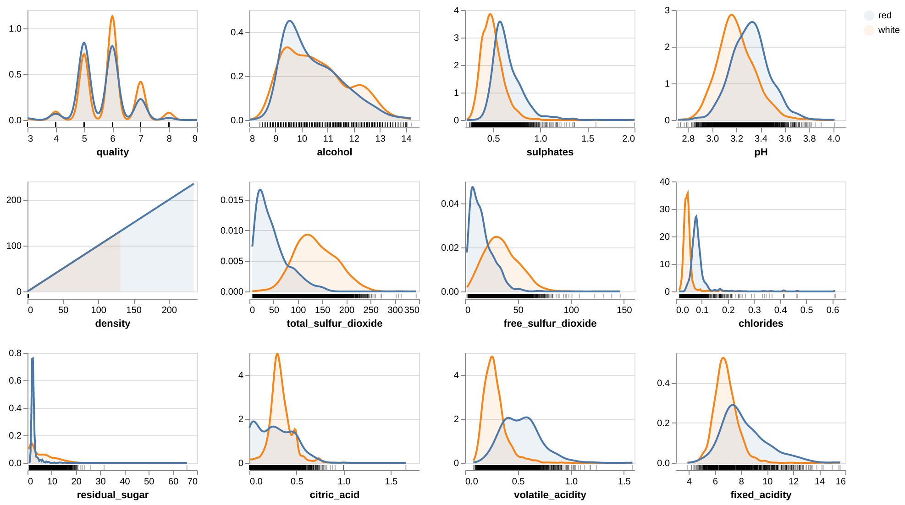
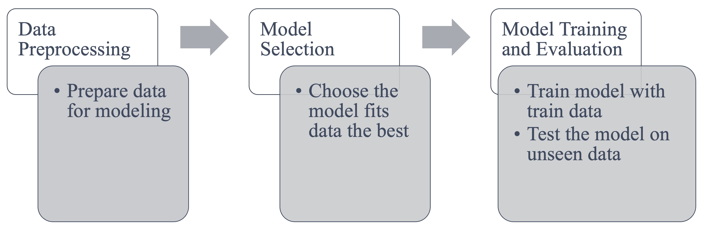

Introduction
The wine industry has long relied on tradition, intuition, and craftsmanship. However, with the rise of machine learning and data science, this centuries-old industry is entering a new era. By analyzing data, winemakers and distributors can optimize production, ensure quality, and better cater to consumers.
In this blog, we’ll explore how machine learning techniques, such as supervised learning and regression models, are being used to enhance efficiency and drive innovation in the wine industry. Specifically, we’ll use the example of predicting wine color based on physiochemical properties, a project with wide-ranging implications for the industry.
Let’s embark on this journey to understand how data science transforms the wine industry and provides actionable insights for both producers and consumers.
The Role of Machine Learning in Wine Production
Machine learning is a powerful tool for making predictions and uncovering patterns in data. For example, consider the task of predicting wine color (red or white) based on chemical attributes like acidity, pH, and alcohol content. This application has several potential benefits:
- Improving Inventory Management: Accurate predictions help wineries and retailers categorize and organize wines, ensuring proper storage and marketing.
- Enhancing Quality Control: Machine learning models can detect misclassified or mislabeled wines, reducing errors before products reach consumers.
- Streamlining Production Processes: Insights from data can guide winemakers in optimizing their recipes and processes, reducing costs and waste.
Recap of Data Science & Machine Learning Basics
Before diving deeper into how machine learning is revolutionizing the wine industry, let’s take a moment to recap some basic concepts in data science and machine learning. This will help build a foundation for understanding the methods we’ll discuss later.
What is Supervised Learning?
Supervised learning is one of the most common types of machine learning. In this approach, the model learns from labeled data, which means each input (e.g., physiochemical properties of wine) is paired with a known output (e.g., wine color: red or white). The goal of supervised learning is to find a function that maps inputs to outputs as accurately as possible.
Imagine you’re a student learning to recognize different types of fruits. If someone shows you a banana and tells you it’s a banana, and then does the same for an apple, you’ll eventually learn to identify these fruits yourself. This is essentially supervised learning—the model (you) is trained on examples with labels (fruit types) to make predictions on unseen examples.
In the context of the wine industry, supervised learning can help predict wine characteristics, like color or quality, based on its chemical composition.
What is a Regression Model?
Regression is a type of supervised learning used for predicting continuous outcomes. Unlike classification (e.g., red or white wine), regression models predict numerical values. For example:
- Predicting the alcohol content of a wine based on its acidity and sugar levels.
- Estimating the optimal harvest date based on weather patterns.
Regression models try to fit a line (or curve) to the data that best represents the relationship between the inputs and outputs. A common example is linear regression, where the goal is to find a straight line that minimizes the difference between predicted and actual values. Suppose you’re trying to predict the price of a bottle of wine based on its age. The older the wine, the more expensive it typically is. Linear regression helps determine the exact relationship between age and price, allowing you to make predictions.
Example Project: Predicting Wine Color Using Physiochemical Properties
Dataset Overview
For this project, the dataset comes from the UCI Machine Learning Repository （https://archive.ics.uci.edu/dataset/186/wine+quality）. It contains data from approximately 6,500 samples of red and white wines. Each sample includes 11 physiochemical properties, such as Fixed Acidity, Volatile Acidity, Citric Acid, Residual Sugar, Alcohol Content.
The target variable (the feature we want to predict) is wine color: red or white.
Before diving into the model training, let’s take a closer look at the data distribution for some key features.
Figure 1 reveals clear differences between red and white wines in key features. For example, red wines generally show higher volatile acidity (linked to tanginess) and citric acid levels, while white wines tend to have more residual sugar (contributing to sweetness) and free sulfur dioxide (used for preservation). Interestingly, alcohol content shows a slightly higher range for white wines, but red wines have lower pH (more acidic), which may influence color. While some features like quality and residual sugar show overlap between wine types, their interactions with other features improve the model’s ability to distinguish red from white wines.

Step-by-Step Workflow

Step1: Data Preprocessing
- Data Cleaning: Removed duplicates and handled missing values. Ensured all features, like acidity and alcohol content, fell within realistic ranges.
- Feature Standardization: Standardized all features to have a mean of 0 and a standard deviation of 1. This prevents features with larger scales from dominating the model.
- Data Splitting: Split the dataset into 70% for training and 30% for testing to evaluate how the model performs on unseen data.
Step 2: Model Selection
We used logistic regression, a simple yet effective supervised learning model, to predict wine color. Logistic regression works by estimating the probability of an event based on input features.
Why logistic regression? 1. Easy to implement and understand. 2. Provides feature importance, helping us interpret which properties are most relevant for predictions. 3. Suitable for binary classification tasks like this one.
Step 3: Model Training and Evaluation
- Training the Model: The model was trained on the training set and fine-tuned using cross-validation, a technique to ensure it generalizes well to new data.
- Evaluation: Tested the model on the remaining 30% of the data, using metrics like accuracy, precision, and recall. These are all metrics to evaluate how good the model perform. The closer to 1, the better the model perform on new datas.
Results:
- Test accuracy: 99.1% of predictions were correct.
- Precision and recall: Both exceeded 98%, showing the model reliably distinguishes red and white wines.
Applications in the Wine Industry
Beyond predicting wine color, machine learning can revolutionize other aspects of the wine industry:
- Optimizing Harvesting:
- By analyzing weather patterns and soil data, machine learning models can predict the best time to harvest grapes for maximum quality.
- Flavor Profiling:
- Using consumer feedback and chemical analysis, data science can help identify flavor profiles that appeal to different markets.
- Supply Chain Management:
- Predictive models can optimize distribution routes and inventory levels, reducing costs and ensuring timely deliveries.
- Personalized Recommendations:
- Just as streaming services recommend shows, machine learning can suggest wines tailored to individual preferences.
Challenges
While the opportunities are vast, adopting machine learning in the wine industry comes with challenges:
- Data Quality: Inconsistent or incomplete data can hinder model performance.
- Interpretability: Winemakers may hesitate to trust “black-box” models that lack transparency.
- Integration: Combining traditional practices with data-driven methods requires a cultural shift.
Conclusion
The integration of data science into the wine industry marks an exciting chapter in its evolution. By leveraging machine learning, winemakers can optimize production, enhance quality, and cater to consumers more effectively.
As we’ve seen, data science doesn’t just provide answers—it opens new possibilities. The future of wine may still be rooted in tradition, but with the power of data, it’s becoming smarter and more efficient.